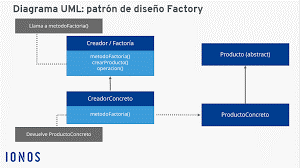
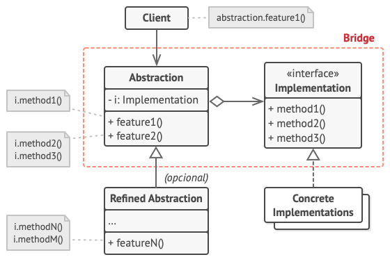
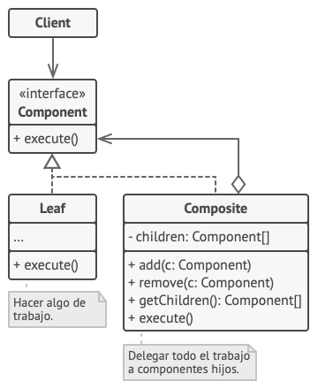
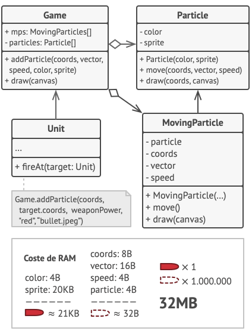
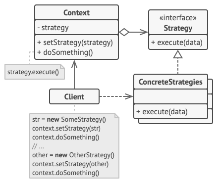
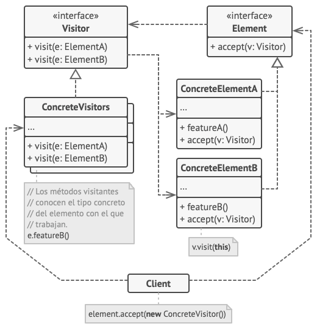

Patrones Creacionales
Estos patrones se utilizan para facilitar la creación de nuevos objetos que buscan incrementar la flexibilidad y reutilización del código existente. Entre los más utilizados podemos nombrar:
- Abstract Factory
- Builder Patterns
- Factory Method
- Prototype
- Singleton
Abstract Factory
Abtract Factory es un patron comun mente utilizado para crear Familias de objetos que se relacionan sin necesidad de especificar sus clases Es decir si tenemos una pizzeria de cadena (Pizza Hut) Tenemos un metodo de fabricacion de pizza que es propia de pizza hut (Mi Factoria Abstracta o Abstrac Factory) y Tenemos la diferencia de ingredientes segun la zona donde este ubicada, En otras palabras Mismo metodo de fabricacion de pizza pero con ingredientes concretos o locales que seria (La Factoria Concreta o Concret Factory)
Builder Pattern
El patrón constructor se utiliza para crear diferentes objetos a partir de una serie de pasos reutilizando el código de construcción. Esto simplifica la necesidad de crear subclases para cada configuración posible de un objeto particular. En este patron lo que hacemos es dividir nuestros un objeto en varia partes fundamentales para comstruirlo Ej: Para hacer una casa basica necesitamos (Piso, Pared, Ventanas, Techo, Puerta) Esto se podria dividir en varios Metodos Constructores Como un constructor para el piso, Otro para la pared y al final un metodo que me muestre el objeto construido y teniendo en cuenta este mismo sistma podemos añadirle mas constructores segun lo que se necesite Como el tipo de material, Otro que cree un garage, Etc...
Diagrama del Builder Pattern

Factory Method

Este patrón ofrece una interfaz para crear nuevos objetos dentro de una superclase permitiendo que las subclases cambien el tipo de objetos que van a crear.
Prototype

Se utiliza para crear nuevos objetos a partir de objetos existentes. A través de la declaración de una interfaz (clonar) este patrón encarga a los propios objetos la acción de clonarse.
Singleton

Se utiliza para restringir la creación de nuevas instancias de una clase a un objeto determinado.
Patrones Estructurales
Los patrones estructurales buscan facilitar la acción de ensamblar objetos y clases dentro de clases estructurales más grandes sin perder la eficiencia y manteniendo la flexibilidad.
- Adapter
- Bridge
- Composite
- Decorator
- Facade
- Flyweight
- Proxy
Adapter

Adaptador es un patrón que se utiliza para que objetos con interfaces incompatibles colaboren entre sí.
Bridge
El patrón Bridge resuelve un problema habitual en la herencia de clases dividiendo clases relacionadas en dos jerarquías diferentes: implementación y abstracción, para que estas puedan desarrollarse independientemente.
Composite
Solo se recomienda utilizar Composite cuando el modelo de código está creado a partir de un sistema ramificado en forma de árbol.
Decorator

Se utiliza para extender el comportamiento de un objeto añadiendo funcionalidades al mismo a través de objetos encapsuladores que presentan dichas funcionalidades.
Facade

Una fachada proporciona una interfaz simplificada para un subsistema complejo. Por ejemplo, este patrón de diseño permite integrar una aplicación con una biblioteca que tiene muchas funciones de las que solo se ocupan unas pocas.
Flyweight
Ayuda a reducir el tamaño de los objetos almacenando en su interior solo el estado intrínseco (información constante) del mismo y compartiendo el resto de la información (estado extrínseco) entre varios objetos similares.
Proxy

Este patrón de diseño se utiliza para crear objetos sustitutos que trabajan como una interfaz hacia cualquier objeto determinado.
Patrones de comportamiento
Los patrones de comportamiento buscan resolver la comunicación entre diferentes áreas
- Chain of responsibility
- Command
- Interpreter
- Iterator
- Mediator
- Memento
- Observer
- State
- Strategy
- Template method
- Visitor
Chain of responsibility

A través de este patrón podremos evitar que la petición emitida por un emisor sea acoplada a un solo receptor permitiendo que más de un objeto pueda responder a dicha petición.
Command

Se utiliza cuando es necesario encapsular dentro de un objeto todos los parámetros que una acción requiere para ejecutarse.
Interpreter

Utilizando Interpreter podremos evaluar un lenguaje a través de una interfaz que indique el contexto en el cual se interpreta.
Iterator
Este patrón de comportamiento se utiliza cuando necesitamos iterar en colecciones o conjuntos de objetos sin la necesidad de intercambiar información relevante.
Mediator

Se utiliza cuando necesitamos controlar las comunicaciones directas entre objetos y disminuir sus dependencias caóticas.
Memento

Este patrón es capaz de almacenar y restaurar la información de un objeto
Observer

A través de este patrón de comportamiento varios objetos interesados (suscriptores) en un objeto en particular (notificador) pueden recibir notificaciones de su comportamiento mientras estén suscriptos a sus notificaciones.
State

Se utiliza para modificar el comportamiento de una clase de objetos dependiendo del estado actual (comportamiento interno) de dichos objetos.
Stategy
Permite separar todos los algoritmos de una clase específica en nuevas clases separadas donde los objetos pueden intercambiarse.
Template method

Este patrón define el esqueleto de un algoritmo y permite a las subclases variar la implementación del comportamiento del mismo.
Visitor
A través de este patrón podremos introducir nuevos algoritmos sin modificar la estructura de objetos que se utilizarán para ejecutarlos.